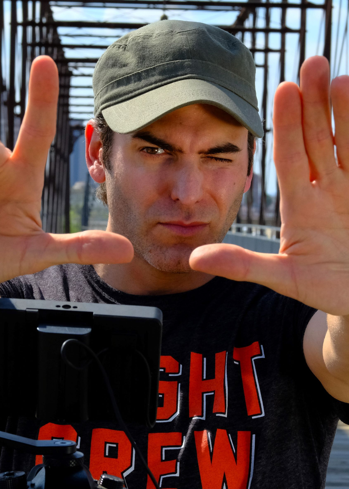

Two detectives questioning Ann Toth about the murder of Elizabeth Short aka “Black Dahlia”.
Logline
Two LA detectives are questioning Ann Toth about living with her at the Florentine Gardens Apartment.
Synopsis
Elizabeth Short was murder mysteriously brutality and her murder remains unsolved. Before her untimely death, there were over 100 suspects and five locations she stay at. The Florentine Gardens is one of them. Ann Toth gives her testimony to Detectives Harry Hansen and Detective Finis Brown of her time living and sharing a room with Elizabeth Short.
About The Florentine Gardens
Robert Cantu’s The Florentine Gardens is a black and white Noir film of Elizabeth Short aka “Black Dahlia” when s and Detective Finis Brown questioned her roommate Ann Toth. Ann narrates how Elizabeth would talk about her dates and make a special request to Mark Hansen. Elizabeth shows her bubbliness and determination living independently in Los Angeles.
Project Specification
GENRE: Film Noir
RUNNING TIME: 14 minutes
COUNTRY OF PRODUCTION: United States
LANGUAGE: English
COLOR: Black and White
SHOT ON: FujiFilm Mirrorless
ASPECT RATIO: 1.85 : 1
RELEASE FORMAT: 4K
FILM LOCATIONS: Los Angeles, California, USA
COMPLETION DATE: August 2020
RELEASE DATE: January 15, 2021
PRODUCTION COMPANY: Corpus Fusion/Austin, Tx, t: 210-251-1448, e: corpusfusion@gmail.com
SOCIAL MEDIA WEBSITES: Film Website: corpusfusion.com, Facebook: facebook.com/corpusfusion, Twitter: twitter.com/fusioncorpus, Instagram: instagram.com/corpusfusion
DIRECTOR’S STATEMENT
The Black Dahlia is a legend that fascinated me for years. It is the most haunting tragedy of A Hollywood Dame whose life was cut short in a gruesome manner. We know details of her murder and the list of suspects that the LA homicide detectives pursued. But who is Elizabeth Short?
After researching her life, I saw a strong woman that has been overlooked due to the chauvinism of that time. Her innocent and vivaciousness drew us to her pictures. She was more than another girl in Hollywood. She was a beautiful drifter with hope. She was independent, resourceful, charming, and sometimes mischievous. She was modern woman ahead of her time.
Elizabeth had many different dimensions and many different angles as a human being. She was looking for happiness and yearning for joy. I am determined to bring her story to life.
This short is about Elizabeth’s experience living at the Florentine Gardens Apartment and she should be remembered for her true smile.
Robert Cantu
Producer, Writer & Director
02/11/2021
Cast
JIM HACKETT as MARK HANSEN
Jim plays the club owner Mark Hansen. Jim is a classically trained actor and graduated from the American Academy in New York. Jim worked off-Broadway at the Public Theater, performed in over 40 national commercials, and appeared in guest and co-starring roles on television & film.
AGNIESZKA MARCHEL as ELIZABETH SHORT
Agnieska plays Elizabeth Short aka “Black Dahlia.” Agnieszka is an actress and producer, known for Faerie Ring, The New Adventures of Peter and Wendy (2014), and Broken Together (2018).
JULIE KRAWCHUK as ANN TOTH
Julie plays Ann the roommate of Elizabeth Short. Julie is an actress, known for Jason Z (2019), and The Florentine Gardens (2021).
EDSON BLACK as DETECTIVE HARRY HANSEN
Edson plays Detective Hansen. Edson is an actor, known for Red Clover (2019), and The Florentine Gardens (2021).
DEO ESWAR as DETECTIVE FINIS BROWN
Deo plays Detective Brown. Deo was born in Summit, New Jersey. He is known for The Dab, and Dilemma (2020).
JASMINE ROSSI as MARJORIE GRAHAM
Jasmine plays Marjorie, a roommate of Elizabeth Short. Jasmine is an actress, known for The Florentine Gardens (2021).
JULIA JAMES as NIGHT CLUB SINGER/ROOMMATE 3
Julia plays roommate. Julia James is an actress from Philadelphia, Pennsylvania. She is known for Rest(2019), Suicide Therapist, Self Isolated, and Privacy(2021).
LEX NIGHT as ELIZABETH’S DATE
Lex plays a date for Elizabeth. Lex is an actor, known for The Juliana Incident (2014), On Time (2017), and A Darker Fifty Shades: The Fetish Set (2015).
PRODUCTION TEAM BIOGRAPHIES
ROBERT CANTU: Producer, Writer & Director
Robert Cantu was born in Corpus Christi, TX, and raised in Houston, TX. In 1998, he lived to Los Angeles and he started out as a still photographer on countless student and amateur films. He got more hands-on experience as a boom operator, PA, and working in the grip department. With his knowledge, he produced his first short film “5150”, an inspired film from Stanley Kubrick’s 2001, and it was entered in numerous film festivals. He continued to volunteer on film sets and then in 2001, he produced and directed “The Barista”. In 2003, Robert produced and directed an ego time bomb detective with no moral principles, “Detective Grgich”, a noir film. In 2004, his first real short film “Suspended Homicide” met his professional standard and he directed with greater confidence. He has written my first full-length screenplay “corpus FUSION”. He writes three more full-length screenplays: “Dirty Mary, Crazy Larry”, “Silent Motive” and “JASONLAND”. In 2019, Robert produced and directed a horror short film, “Jason Z”. A Youtube released was on June 13, 2019. By 2020, Robert produced and directed two short Noir films, “The Florentine Gardens” and “Homicidal Crimes”. Both are post-production and are pending release.
JAVIER PRATO: Colorist & Sound Editor

Javier Prato is an editor and cinematographer from Bueno Aires, Argentina. He is known for Ring of Blood (2008), Empty Arms (2007) and Jesus Christ: The Musical (2005).
CHRIS BAKIR: Editor
Chris is currently resides in San Antonio, TX. Worked in sounds in Florentine Garden(2019) & Homicidal Crime(2021).
FULL CREDITS
CORPUS FUSION ENTERTAINMENT presents
ROBERT CANTU FUSION
“The Florentine Gardens”